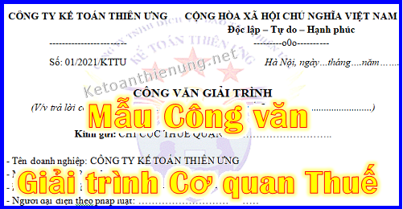

Chia sẻ 1 số Mẫu công văn xin hủy tờ khai thuế; Ccông văn giải trình chậm nộp tờ khai thuế; Công văn giải trình thuế; Công văn xin hủy tờ khai lệ phí môn bài; Công văn xin hủy tờ khai thuế GTGT; Công văn trả lời công văn của Cơ quan thuế ...

----------------------------------------------------------------------------
Dưới đây là 1 số Mẫu Công văn để các bạn tham khảo, tùy vào tình hình thực tế tại Doanh nghiệp, các bạn viết sao để Cơ quan thuế nắm được tình hình của Doanh nghiệp nhé.
1. Mẫu Công văn xin hủy tờ khai lệ phí môn bài:
|
CÔNG TY TƯ VẤN MINH PHÚC ------------------------ |
CỘNG HÒA XÃ HỘI CHỦ NGHĨA VIỆT NAM Độc lập – Tự do – Hạnh phúc ---------o0o---------- |
| Số: 01/2025/KTTU | Hà Nội, ngày…tháng 09 năm 2026 |
(V/v: Thông báo hủy tờ khai lệ phí môn bài năm 2025)
Kính gửi: CHI CỤC THUẾ QUẬN ........................................
- Tên doanh nghiệp: CÔNG TY TƯ VẤN MINH PHÚC
- Mã số thuế: 0118642057
- Địa chỉ trụ sở chính: 181 Xuân Thủy – Cầu Giấy – Hà Nội
- Người đại diện theo pháp luật: ………………………………
- Điện thoại: ………………………..
Căn cứ theo Điều 1 Nghị định 22/2020/NĐ-CP ngày 24 tháng 02 năm 2020 của Chính phủ về việc sửa đổi, bổ sung một số điều của Nghị định SỐ 139/2016/NĐ-CP ngày 04/10/2016 của Chính phủ quy định về lệ phí môn bài:
“8. Miễn lệ phí môn bài trong năm đầu thành lập hoặc ra hoạt động sản xuất, kinh doanh (từ ngày 01 tháng 01 đến ngày 31 tháng 12) đối với:
a) Tổ chức thành lập mới (được cấp mã số thuế mới, mã số doanh nghiệp mới).
“1. Khai lệ phí môn bài một lần khi người nộp lệ phí mới ra hoạt động sản xuất, kinh doanh hoặc mới thành lập.
a) Người nộp lệ phí mới ra hoạt động sản xuất, kinh doanh hoặc mới thành lập; doanh nghiệp nhỏ và vừa chuyển từ hộ kinh doanh thực hiện khai lệ phí môn bài và nộp Tờ khai cho cơ quan thuế quản lý trực tiếp trước ngày 30 tháng 01 năm sau năm mới ra hoạt động sản xuất, kinh doanh hoặc mới thành lập.”
Căn cứ quy định trên, Công ty …………………………………………….. thành lập ngày …………………thuộc đối tượng được miễn lệ phí môn bài năm 2020 (năm đầu thành lập). Nhưng Công ty đã lỡ nộp Tờ khai lệ phí môn bài năm 2020 vào ngày …………….. trên trang thuedientu.gdt.gov.vn. Nay Công ty lập văn bản này, kính mong Chi cục thuế Quận: …………………….. hủy Tờ khai lệ phí môn bài năm 2020 mà Công ty chúng tôi đã nộp, để chúng tôi kê khai lệ phí môn bài năm 2021 theo đúng quy định.
Chúng tôi xin chân thành cảm ơn!
|
Nơi nhận: - Như trên. - Lưu VP. |
ĐẠI DIỆN DOANH NGHIỆP GIÁM ĐỐC (Ký, ghi rõ họ tên và đóng dấu) |
============================================
Mẫu Công văn xin hủy tờ khai thuế GTGT đã nộp:
|
CÔNG TY TƯ VẤN MINH PHÚC ------------------------ |
CỘNG HÒA XÃ HỘI CHỦ NGHĨA VIỆT NAM Độc lập – Tự do – Hạnh phúc ---------o0o---------- |
| Số: 01/2021/KTTU | Hà Nội, ngày…tháng 09 năm 2026 |
CÔNG VĂN
(V/v : Thông báo về việc hủy tờ khai thuế GTGT tháng …………….)
Kính gửi: Chi cục thuế Quận .......................
- Tên doanh nghiệp: CÔNG TY KẾ TOÁN DIỆU TÂM
- Mã số thuế: 0118642057
- Địa chỉ trụ sở chính: 181 Xuân Thủy – Cầu Giấy – Hà Nội
- Người đại diện theo pháp luật: ………………………………
- Điện thoại: ………………………..
Căn cứ theo Điều 9 Nghị định 126/2020/NĐ-CP quy định:
Điều 9. Tiêu chí khai thuế theo quý đối với thuế giá trị gia tăng và thuế thu nhập cá nhân
1. Tiêu chí khai thuế theo quý
a) Khai thuế giá trị gia tăng theo quý áp dụng đối với:
a.1) Người nộp thuế thuộc diện khai thuế giá trị gia tăng theo tháng được quy định tại điểm a khoản 1 Điều 8 Nghị định này nếu có tổng doanh thu bán hàng hoá và cung cấp dịch vụ của năm trước liền kề từ 50 tỷ đồng trở xuống thì được khai thuế giá trị gia tăng theo quý. Doanh thu bán hàng hóa, cung cấp dịch vụ được xác định là tổng doanh thu trên các tờ khai thuế giá trị gia tăng của các kỳ tính thuế trong năm dương lịch.
Trường hợp người nộp thuế thực hiện khai thuế tập trung tại trụ sở chính cho đơn vị phụ thuộc, địa điểm kinh doanh thì doanh thu bán hàng hóa, cung cấp dịch vụ bao gồm cả doanh thu của đơn vị phụ thuộc, địa điểm kinh doanh.
a.2) Trường hợp người nộp thuế mới bắt đầu hoạt động, kinh doanh thì được lựa chọn khai thuế giá trị gia tăng theo quý. Sau khi sản xuất kinh doanh đủ 12 tháng thì từ năm dương lịch liền kề tiếp theo năm đã đủ 12 tháng sẽ căn cứ theo mức doanh thu của năm dương lịch trước liền kề (đủ 12 tháng) để thực hiện khai thuế giá trị gia tăng theo kỳ tính thuế tháng hoặc quý.
Căn cứ theo quy định trên Công ty tôi thuộc đối tượng khai thuế GTGT theo quý nhưng do nhầm lẫn kế toán đã lỡ nộp tờ khai thuế GTGT tháng 1/2024 vào ngày 09/02/2024. Vì vậy Công ty tôi viết công văn này kính mong Chi Cục Thuế Quận .................... hủy tờ khai thuế GTGT tháng 01/2024 để Công ty chúng tôi kê khai thuế theo quý theo đúng quy định.
Chúng tôi xin chân thành cảm ơn!
|
Nơi nhận: - Như trên. - Lưu VP. |
ĐẠI DIỆN DOANH NGHIỆP
GIÁM ĐỐC (Ký, ghi rõ họ tên và đóng dấu) |
========================================
Mẫu Công văn giải trình thuế:
|
CÔNG TY TƯ VẤN MINH PHÚC ------------------------ |
CỘNG HÒA XÃ HỘI CHỦ NGHĨA VIỆT NAM Độc lập – Tự do – Hạnh phúc ---------o0o---------- |
| Số: 01/2024/KTTU | Hà Nội, ngày…tháng 09 năm 2026 |
CÔNG VĂN GIẢI TRÌNH
(V/v trả lời công văn số ……… của Chi cục thuế Quận .............................)
Kính gửi: CHI CỤC THUẾ QUẬN …………………………..
- Tên doanh nghiệp: CÔNG TY TƯ VẤN MINH PHÚC
- Mã số thuế: 0118642057
- Địa chỉ trụ sở chính: 181 Xuân Thủy – Cầu Giấy – Hà Nội
- Người đại diện theo pháp luật: ………………………………
- Điện thoại: ………………………..
Ngày 15 tháng 09 năm 2026, chúng tôi nhận được Công văn số …………… của Chi cục thuế quận ……………………. về việc ……………………. Chúng tôi xin được trả lời lần lượt các câu hỏi trong Công văn như sau:
…………………………………………………………………………
…………………………………………………………………………
………………………………………………………………………
Công ty ………………………………………… kính đề nghị Chi cục thuế quận ………………………… xem xét, tạo điều kiện cho Công ty kê khai và nộp thuế theo đúng quy định của pháp luật.
Xin trân trọng kính chào!
|
Nơi nhận: - Như trên. - Lưu VP. |
ĐẠI DIỆN DOANH NGHIỆP GIÁM ĐỐC (Ký, ghi rõ họ tên và đóng dấu) |
===============================================
Mẫu Công văn giải trình chậm nộp tờ khai thuế:
|
CÔNG TY TƯ VẤN MINH PHÚC ------------------------ |
CỘNG HÒA XÃ HỘI CHỦ NGHĨA VIỆT NAM Độc lập – Tự do – Hạnh phúc ---------o0o---------- |
| Số: 01/2021/KTTU | Hà Nội, ngày…tháng 09 năm 2026 |
CÔNG VĂN GIẢI TRÌNH
(V/v chậm nộp Tờ khai thuế GTGT tháng…….)
Kính gửi: CHI CỤC THUẾ QUẬN …………………………..
- Tên doanh nghiệp: CÔNG TY TƯ VẤN MINH PHÚC
- Mã số thuế: 0118642057
- Địa chỉ trụ sở chính: 181 Xuân Thủy – Cầu Giấy – Hà Nội
- Người đại diện theo pháp luật: ………………………………
- Điện thoại: ………………………..
Ngày 15 tháng 09 năm 2026, chúng tôi nhận được công văn số …………….. của Chi cục thuế quận ......................... về việc chậm nộp tờ khai thuế giá trị gia tăng tháng …………….. Chúng tôi xin trình bày lý do dẫn đến việc chậm nộp như sau:
…………………………………………………………………………….
…………………………………………………………………………….
…………………………………………………………………………….
Căn cứ theo Khoản 1 Điều 3 Nghị định 111/2013/NĐ-CP quy định:
Điều 3. Các tình tiết giảm nhẹ, tình tiết tăng nặng
1. Khi quyết định thời hạn áp dụng biện pháp giáo dục tại xã, phường, thị trấn, những tình tiết giảm nhẹ quy định tại Điều 9 Luật xử lý vi phạm hành chính phải được xem xét, gồm:
a) Người vi phạm đã có hành vi ngăn chặn, làm giảm bớt hậu quả của vi phạm hoặc tự nguyện khắc phục hậu quả, bồi thường thiệt hại;
b) Người vi phạm đã tự nguyện khai báo, thành thật hối lỗi; tích cực giúp đỡ cơ quan chức năng phát hiện và xử lý vi phạm;
c) Vi phạm trong tình trạng bị kích động về tinh thần do hành vi trái pháp luật của người khác gây ra; vượt quá giới hạn phòng vệ chính đáng; vượt quá yêu cầu của tình thế cấp thiết;
d) Vi phạm do bị ép buộc hoặc bị lệ thuộc về vật chất hoặc tinh thần;
đ) Người vi phạm là phụ nữ mang thai, người nuôi con dưới 36 tháng tuổi, người già yếu, người có bệnh hoặc khuyết tật làm hạn chế khả năng nhận thức hoặc khả năng điều khiển hành vi của mình;
e) Vi phạm vì hoàn cảnh đặc biệt khó khăn mà không do mình gây ra;
g) Vi phạm do trình độ lạc hậu.
Công ty ................................................ kính đề nghị Chi cục thuế quận .............................. xem xét các tình tiết giảm nhẹ để giảm mức phạt vi phạm hành chính, tạo điều kiện cho Công ty kê khai và nộp thuế theo đúng quy định của pháp luật.
Xin trân trọng kính chào!
|
Nơi nhận: - Như trên. - Lưu VP. |
ĐẠI DIỆN DOANH NGHIỆP GIÁM ĐỐC (Ký, ghi rõ họ tên và đóng dấu) |
===============================================